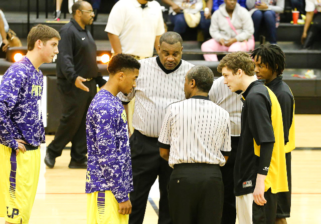
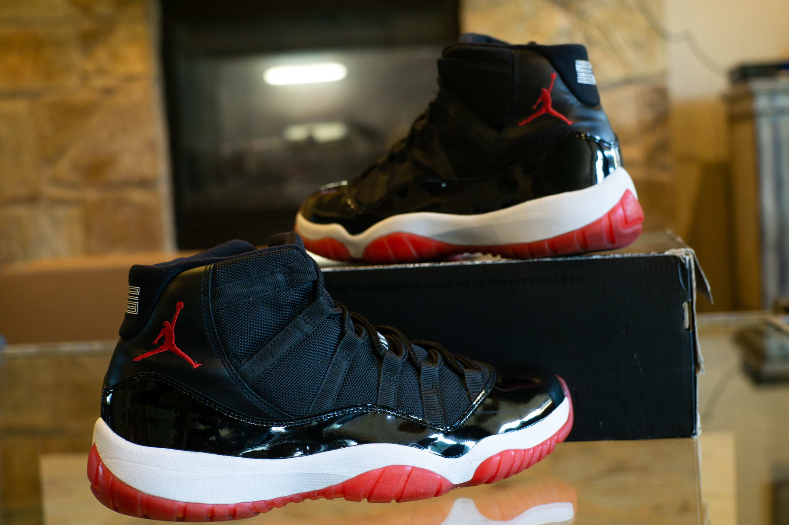

I grew up in deep East Texas in a small town known as Lufkin, Tx. Even though Lufkin may be small in population size, we are widely known for our great sports program, especially football. Big time athletes like Dez Bryant and Keke Coutee are few of the many great athletes that come out of Lufkin. Like the average American, I grew up in a household surrounded by sports. Basketball, track and field, football, you name it I played it. Around my Sophomore year in high school, I got a job at Best Buy working in the computer department and cameras section for a little over two years. This is how I got into technology and photography. Astonished at how much I never knew about everything tech; I had to learn more. This became a big reason why I choose my major and minor. I still get excited knowing there is more to learn and can not wait to see where my journey ahead takes me.
I came to school down here due to the great location and because I have a good amount of family members here if I ever need them. This is my 3rd year now living in San Marcos, Tx and I've enjoyed every bit of it.
|  - Basketball Ever since I could remember, basketball has been one thing in my life that has never failed to take away stress from my world. Dr. James Naismith created much more than the sport of basketball. He created a cure. |
- Photographing In photography there is a reality so subtle that it becomes more real than reality. - Alfred Stieglitz |
- Video Games As my opinion goes. If your not a gamer, your not living. |
|  - Shoes Shoe fanatic. |
When I'm not in class I have a job working at San Marcos Nike factory store at the Premium Outlets. I've been there for around 2 years and love the atmosphere of working with other college students who enjoy similar things as me.